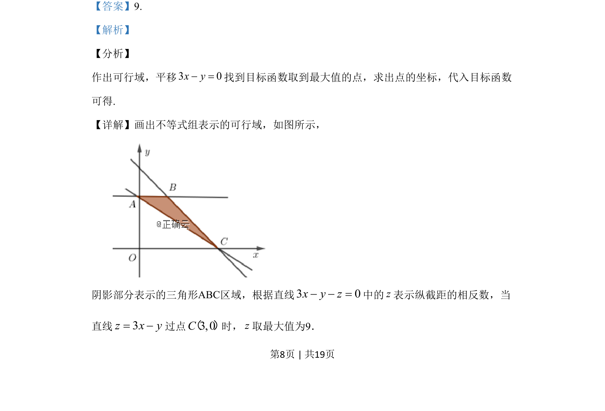
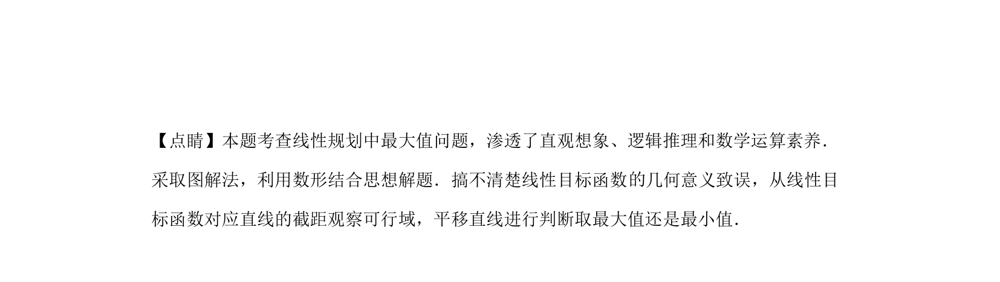

考点：线性规划 可行域 目标函数最值 数形结合
本题考查线性规划中目标函数的最大值，通过平移直线求最优解。


📄 原 PDF 第 8 页：
素材/真题/吉林/2008-2024·（吉林）数学高考真题/2019年高考数学试卷（文）（新课标Ⅱ）（解析卷）.pdf
13.若变量x，y满足约束条件 2 3 6 03 02 0x yx yy，，，+ - ³ìï+ - £íï- £î 则z=3x–y的最大值是_____.
【答案】9. 【解析】 【分析】 作出可行域，平移3 0x y- =找到目标函数取到最大值的点，求出点的坐标，代入目标函数 可得. 【详解】画出不等式组表示的可行域，如图所示， 阴影部分表示的三角形ABC区域，根据直线3 0x y z- - =中的z表示纵截距的相反数，当 直线3z x y= -过点3,0C（）时，z取最大值为9．